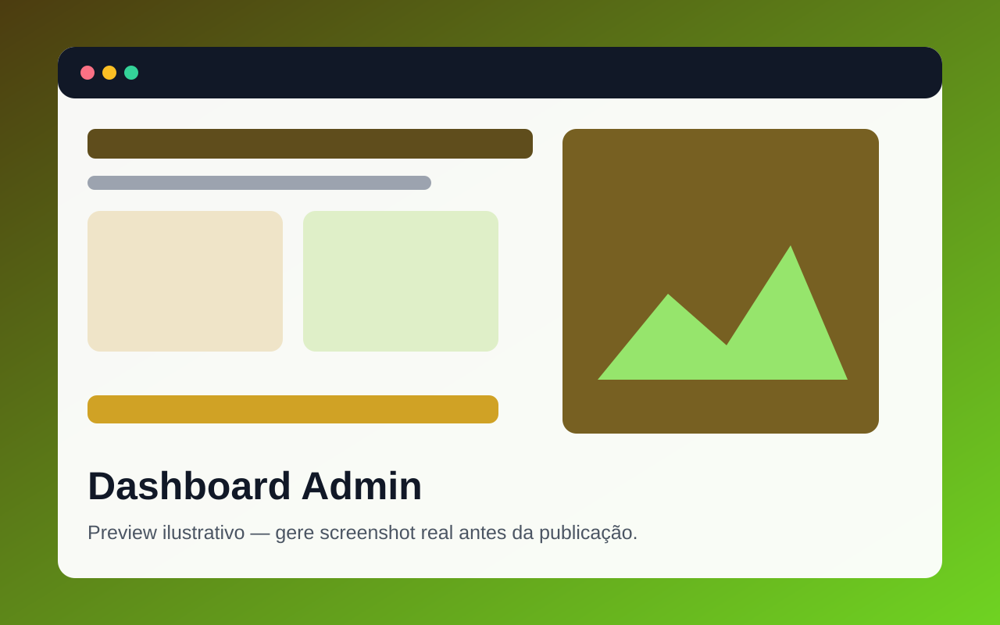

Tecnologias
HTML · CSS · JavaScript · Bootstrap

Preview provisóriosistemas-001 · Sistemas / Dashboards
Painel administrativo para sistemas, indicadores e operação.
HTML · CSS · JavaScript · Bootstrap
Marca, cores, textos, fonte, botões e imagem de capa através do painel da demonstração.
Start Bootstrap SB Admin por Start Bootstrap · MIT.
Consulte a configuração de orçamento.